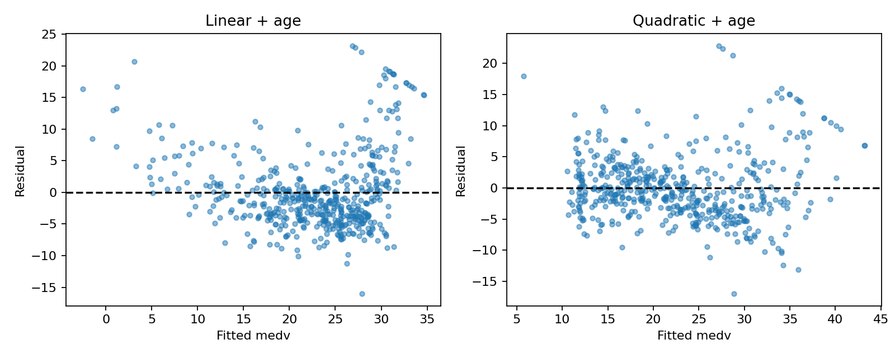

代码 3.6.6-04 · 比较残差图
按完整 Notebook 的顺序运行；本块可能依赖前面的变量。3.6—3.7包含教材真实数据与模拟实验；全样本统计分析不等于独立测试评估。
逐步读代码
subplots(1,2) 创建一行两图；axes装着两个坐标轴。zip 同时取坐标轴、结果对象和标题，每轮用匹配的三者作图。模型不同，但绘图逻辑相同，所以用循环。
观察加入二次项后残差弯曲是否减弱，并继续检查异方差、异常点等；不要用一个很小的p值宣布所有假设都正确。
实际运行输出
No text output. See the figure or explanation below.
